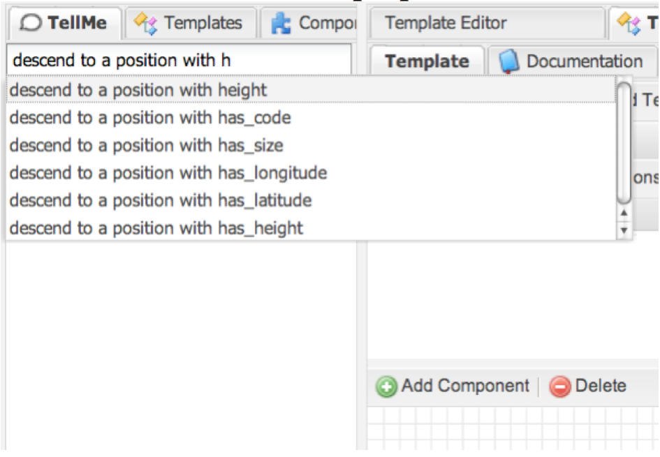
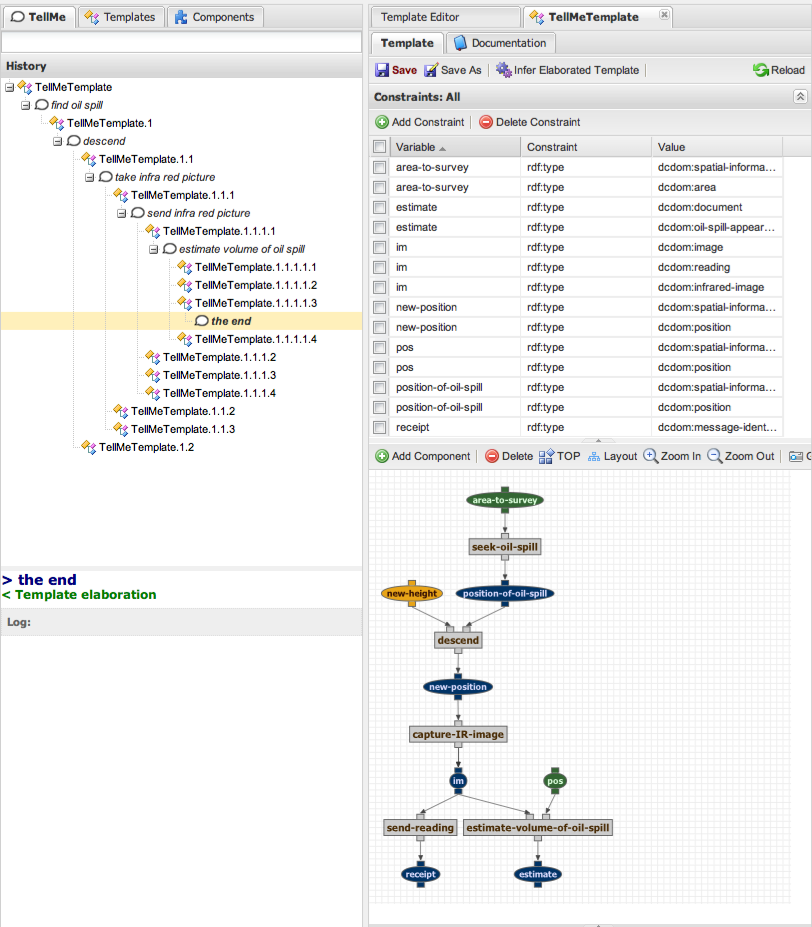

|
|

|
| Learning from natural tutorial instruction | |
Research
Natural instruction is inherently error prone and incomplete. Human teachers regularly omit important details, either because for a human such details might be obvious, or because they simply forgot about them. We are developing a system that is able to semantically reason about the consistency of instruction, capable of hypothesizing ways to correct errors or fill gaps in instructions, and rank such hypotheses in terms of their likelihood.TellMe: Allowing Non-Programmers to TEACH Procedures through Natural Tutorial Instruction
We describe the main features of our approach using an example of the interaction experienced by one of our users who is a non-programmer and used our TellMe system to create a procedure.
The following gives an overview of the interaction of TellMe with a user. The utterances are verbatim what the user would type. We use scenarios where the system learns procedures executed by airplane pilots to patrol an area looking for oil pollution from ships. The user is teaching the kinds of reconnaissance tasks that pilots do in the Belgian Navy, which are scenarios that we chose for our evaluation, as we will describe later on. The system starts off having a number of primitive actions for recording the situation with a variety of instruments, including infrared and ultraviolet cameras, SLAR cameras, and digital picture and video cameras. There are also primitive actions to send alerts and reports back to the base, and to generate initial estimates of the volume of the spill.
User: "find oil spill, descend to a position of height 200"The system shows the user that it assumes that meant to descend after finding the spill. It also shows the user an alternative interpretation where the descent was meant to happen before finding the spill. It asks the user to either accept the assumed interpretation and if not to choose the alternative.
User: "film the spill"The system indicates it did not understand that
User: "record videos and send them"The system shows the user that it assumes that meant to iterate over each of the videos and send each in turn, since the send action is defined for sending one document at a time.
The system shows the user that the result of sending the videos is a series of message receipts.
The system shows that it assumes the position to be after the descent, it also shows the alternative interpretation that it is the position before descending.
User: "record GPS reading"The system shows the user that it assumes that the instruction meant to record the GPS reading over the position after descending. It also shows the user an alternative interpretation which is to record the GPS reading at the position when the spill was first found. It asks the user to either accept the assumed interpretation and if not to choose the alternative.
User: (selects the latter option)
User: "record image"The system shows three interpretations, one for the action to record IR image, another for record UV image, and another to record SLR image
User: "send thickness image"The system shows the user that it is not familiar with the term high level alert, but that it assumes it is a kind of alert given the context in which the term is used. The user does not have to interrupt the instruction and define it now.
The system shows the user that the send action requires some evidence as input, and that it assumes that to be the output of the record GPS reading action.
This is an example of how a user might teach a procedure where a plane is to descend closer once a spill is found, then take videos and send them to the headquarters, and to record the GPS readings and send them along as well.
We now discuss the main features of our approach and referring to the screenshot example below to illustrate how the features manifest in the user interface.
Key Feature: Exposing Prior Knowledge
A challenge that users face when teaching a system is to figure out what the system already knows or what capabilities it has. Lessons always build on prior knowledge, using it as building blocks to the instruction.
Our approach is to constrain the user's input with a command line interface that completes the user's utterance based on the objects and actions that are already known to the system [Groth and Gil 2009]. In this way the system exposes known actions and object types, which serve as building blocks to the user's expression of each instruction command.
Here is an example of how the system is exposing what it knows
about properties of positions:

Key Feature: User Input as Controlled Natural Language
One important challenge that we need to address is that while natural language is a very natural way to provide tutorial instruction, interpreting unconstrained natural language is far beyond the state of the art.
Our approach is to use a paraphrase-based interpretation system that matches the user's utterance against a set of pre-defined paraphrase patterns, following the approach in [Gil and Ratnakar 2008]. Each paraphrase pattern is associated with a set of primitive commands that the user would have to use in order to have the intended effect that is described with the paraphrase pattern. The paraphrase patterns are exposed to the user through the command line interface described above.
For example, the utterance "descend to a position with altitude 200" is mapped to a paraphrase pattern component-as-verb +output-object +output-property + output-property-value. This paraphrase pattern is tied to a command that finds a component whose name matches the verb and adds it to the procedure. It further determines which of its defined outputs matches the uttered output and asserts the utter value for the uttered property of the object corresponding to that output.
When an utterance cannot be mapped to any paraphrase pattern, the system indicates so to the user and then the user has to reformulate that instruction. This is the case with the utterance "film the spill" in the above example.
Many studies have found that users bring up new terms in any domain following a Zipf's law and there are always new terms that come up [Bugmann et al 01]. When a new term appears in an utterance, TellMe will make assumptions about what it might mean. For example, when the user utters "send thickness image" and the system is not familiar with that term, it will assume that the term refers to an object (as opposed to an action or a property), and that it is a type of image since only images are sent.
The combination of the command line interface and the paraphrase-based interpretation system gives the user the illusion of entering free text while the system actually is controlling what the user can input in ways that are amenable to understanding and interpretation.
Key Feature: Share Learning State to Establish Trust
An important principle in user interface design is establishing user trust. A user needs to understand what the system is doing about the input she provided, and trust that the system is taking appropriate action. In our case, the system should give feedback to the user about what it is learning from the instruction. It must do so unintrusively, more as a nod than a detailed report, so that the user can focus on continuing with the lesson. Users need to know what the system has understood and learned so far as the lesson progresses.
Our approach is that the system always shares its internal learning state. The below screen-shot of TellMe corresponds to the interaction above. Its current procedure hypothesis is shown on the right hand side. At the bottom a dataflow diagram is shown. At the top, a set of constraints is shown, most of which were inferred by the system. In many cases, the user's instruction is ambiguous and the system creates alternative interpretations, each resulting in a different procedure hypotheses. To show that it is considering these hypotheses, it shows them in the History panel, where the user can view them. She is always asked to select one of them.
For example, in the third utterance the user specifies to "record GPS reading". The user did not say from what position to take the reading. In this case, the system generates three interpretations and shows them as options in the history window. The first interpretation is that the image should be taken at the position after the descent. But it is possible that the user meant the position before the descent, and that is presented as a second option. The third interpretation considers taking the reading from yet another position that the user may want to describe later. The user has to select one before continuing, and the top option is selected by default. As we will see next, TellMe uses heuristics to rank these options, and because it considers the first interpretation of the three to be more likely it will rank it first.
Key Feature: Deductive and Heuristic Reasoning
One important challenge is that natural instruction is often incomplete. Therefore, the system has to address those shortcomings if it is to learn the complete procedure. Our approach is to use deductive and heuristic reasoning.
Deductive reasoning is used to make assumptions about the objects and steps in the procedure in order to create constraints on objects that are underspecified. The system is effectively performing deductive reasoning to infer what is not mentioned in the instruction. All the constraints shown in the top right panel were deduced by the system, and most refer to objects that were not mentioned in the instruction. For example, the user does not mention that the input to the procedure is an area to survey to find the spill, but the system deduces that from what the instruction says. Also, the fact that taking a picture results in a new image being created is not mentioned in the instruction, but the system adds that to its knowledge.
Deductive reasoning is also used to interpret new terms that the system has never seen before. Recall that based on their role in the paraphrase patterns the system assigns a syntactic category. Through deduction, the system infers what is the type of that new entity and possibly other constraints. In our example, "thickness image" will be classified as a type of image.
The second kind of reasoning used in TellMe is heuristic. Heuristic reasoning is used to figure out how those issues could be resolved. These heuristics essentially create possible completions or corrections of the procedure hypothesis that the system created from the user instruction. TellMe shows the user options that are ranked heuristically.
Heuristic reasoning makes the instruction more natural in that the system not only has identified what issues to resolve, which would result in questions to the user. The system has gone further in taking the initiative to formulate possible answers to those questions. This makes the instruction more natural because this is something that teachers expect from human students.
Key Feature: Selective QuestionsM
An important principle in designing effective user interfaces is to take into account the cost of requesting user interventions. Because instruction is incomplete, the system may have many possible interpretations and therefore it could ask many questions to the user to determine which is the one that the user intended. Yet, later instruction may address those questions and so the user intervention was unnecessary and would not be considered natural. Although a user in teaching mode can be expected to be more willing to cooperate than in other circumstances, the system should not insist on asking questions constantly just to satisfy its learning goals to disambiguate and to complete the instruction.
Addressing this challenge is difficult, because if the system postpones all its questions then there may be a large space of possible candidate interpretations that would make learning very unmanageable.
We use eager questioning to ensure that a single procedure hypothesis can be shown to the user as a single procedure sketch. The system asks the user to select among procedure sketches when several are possible. We use lazy questioning for other matters. For example when an unknown term is used in the instructions, the system makes assumptions about it and proceeds without interrupting the user with questions. This is the case in the example interaction above when the user refers to a "thickness image" which is an unknown term.
